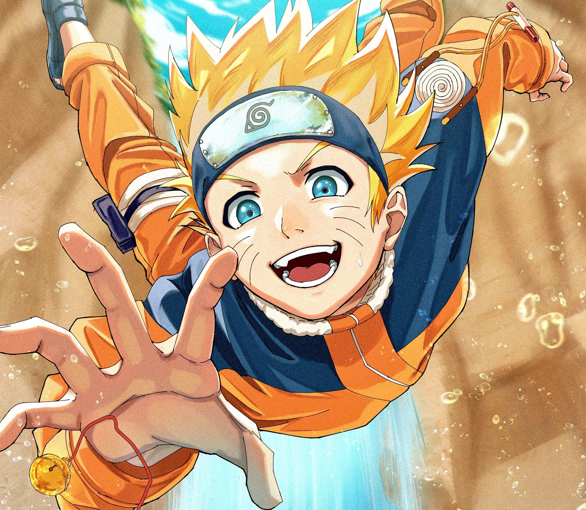

Naruto Uzumaki
Naruto Uzumaki, o herói icônico de "Naruto", é um ninja determinado e
otimista da Vila da Folha. Conhecido por sua jornada de superação, Naruto
busca se tornar o Hokage, líder da sua vila, para conquistar o reconhecimento e
respeito dos outros. Dotado de habilidades ninja excepcionais, incluindo a
utilização de chakra e a transformação em diversas formas, Naruto enfrenta
desafios épicos, constrói laços poderosos e defende a paz em seu mundo.
